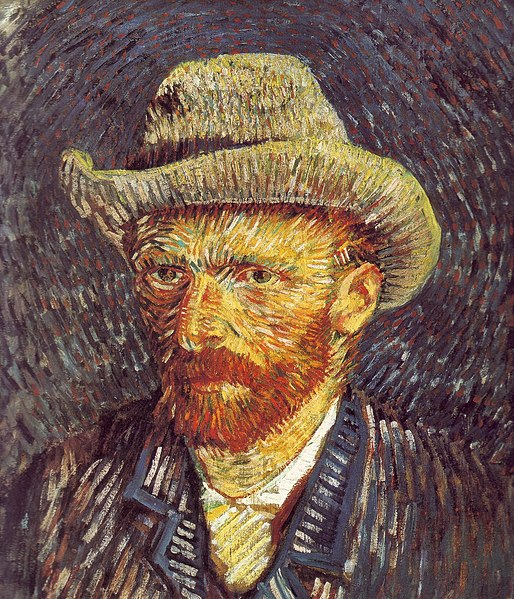

Sobre mi

Mi nombre es Vincent Willem van Gogh, nací el 30 de marzo de 1853 y mi juventud fué alegre, fría y estéril. Esudié en la escuela secundaria HBS Koning Willem II (Tilburg) viviendo con la familia Hannik en la calle Sint Annaplein 18-19 y permanecí allí hasta que dejé los estudios de manera definitiva a los quince años. Si bien me conocen por mi carácter difícil y mi temperamento fuerte, en realidad no soy tan terrible.
Mi primer trabajo fué en una galería de arte, en 1869, a la edad de 16 años, como aprendiz en Goupil & Co. (más tarde Boussod & Valadon), una importante
compañía internacional de comercio de arte de La Haya de la que mi tío Vincent fue socio. Es un negocio maravilloso. Cuanto más tiempo se trabaja en él más ambicioso se vuelve uno.
En mayo de 1875 fue destinado a París, donde creció mi amor por el arte. En particular, en una exposición de dibujos de Jean-François Millet, cuando entré en la sala del hotel Drouot, donde estaban expuestos, sentí alguna cosa como: descálzate porque el suelo que pisas es sagrado.
Tuve un amor no correspondido que me llevó a convertirme en pastor protestante para luego, en 1879, partir como misionero a una región minera en Bélgica. Cuando me encontraba en el púlpito, me sentía como quien desde una oscura cueva subterránea vuelve a salir a la plena luz, y es maravilloso pensar que, desde ahora, predicaré el Evangelio por todo el mundo.
Los carboneros y los tejedores siguen constituyendo una raza aparte de los demás trabajadores y artesanos y siento por ellos una gran simpatía y me sentiría feliz si un día pudiera dibujarlos, de modo que estos tipos todavía inéditos o casi inéditos fuesen sacados a luz.
Así que me decidí y comencé a dibujar a los locales, y en 1885 pinté un cuadro que algunos conocerán, titulado "los comedores de patatas". Mi paleta en esos comienzos se caracterizaba por los colores de tonos sombríos y terrosos. Actualmente vivo en Bruselas y sigo en constante evolución artística.